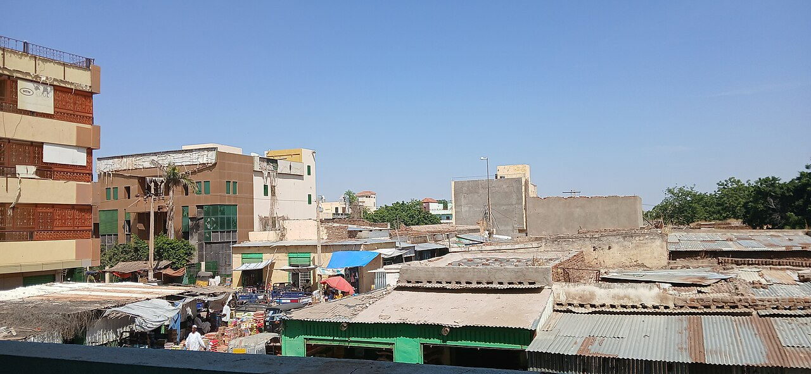

Ataques con drones en todo Sudan matan a mas de 160 personas, incluidas 80 cerca de un mercado en Kordofan Occidental
El balance de la ola de ataques desde el viernes subio a mas de 160 muertos. Un ataque de las RSF contra personas desplazadas en Nilo Azul mato a 41 personas el viernes, y la ONU pidio rendicion de cuentas.

Puntos clave
- Actualizado a las 08:51 UTC, 20 de octubre de 2026.
- Mas de 100 personas han muerto en ataques con drones en todo Sudan desde el domingo, en bombardeos que alcanzaron una localidad con mercado en Kordofan Occidental, la ciudad de Nyala en Darfur y…
- El ataque mas mortifero golpeo Al-Dibab, una localidad de Kordofan Occidental, en el suroeste de Sudan, el domingo por la tarde, 18 de octubre.
Actualizado a las 08:51 UTC, 20 de octubre de 2026. El balance de la ola de ataques con drones en todo Sudan desde el viernes subio a mas de 160 personas muertas, segun personal medico y grupos de derechos citados por Al Jazeera. La cifra mas alta incluye un ataque que los primeros informes no recogieron: el viernes 16 de octubre, un dron de las RSF golpeo una reunion de personas desplazadas en la zona de Abu Shandi, en la provincia de Nilo Azul, cerca de la frontera con Etiopia, y mato a 41 personas, incluidos ocho ninos y muchas mujeres, segun Emergency Lawyers. El grupo califico el ataque de tragedia humanitaria. La Oficina de la ONU para la Coordinacion de Asuntos Humanitarios dijo que estaba consternada por el ataque reportado, que tambien hirio a decenas de personas. Denise Brown, coordinadora residente y humanitaria de la ONU en Sudan, dijo que condenar las muertes no bastaba y pidio rendicion de cuentas. Un portavoz de las RSF no respondio a una solicitud de comentarios, informo Associated Press.
Mas de 100 personas han muerto en ataques con drones en todo Sudan desde el domingo, en bombardeos que alcanzaron una localidad con mercado en Kordofan Occidental, la ciudad de Nyala en Darfur y una casa en la capital, Jartum, segun residentes, personal medico y fuentes paramilitares que hablaron con Agence France-Presse.
El ataque mas mortifero golpeo Al-Dibab, una localidad de Kordofan Occidental, en el suroeste de Sudan, el domingo por la tarde, 18 de octubre. Un dron ataco un punto de transporte donde los vecinos se habian reunido tras el dia de mercado para buscar como volver a casa. El dron golpeo una vez, volvio unos 10 minutos despues y golpeo de nuevo, conto a AFP el residente Ahmed Abakar Wadi. Wadi dijo que ayudo a enterrar al menos a 50 victimas, incluido su propio hermano. Una fuente medica dijo que 47 heridos fueron llevados a la cercana localidad de Al-Mujlad, donde 30 murieron despues por sus heridas, lo que eleva el balance en Al-Dibab a 80 muertos.
Kordofan Occidental esta controlado por las paramilitares Fuerzas de Apoyo Rapido, o RSF, en guerra con el ejercito de Sudan desde abril de 2023. La administracion autoproclamada de las RSF, conocida como Tasis, y el grupo sudanes de derechos Emergency Lawyers acusaron al ejercito de llevar a cabo el ataque de Al-Dibab. El ejercito no ha hecho comentarios, y no se ha confirmado de forma independiente quien realizo el ataque.
Nyala y Jartum, alcanzadas el lunes
Horas despues del ataque de Al-Dibab, a primera hora del lunes, un ataque con dron golpeo Nyala, capital de Darfur del Sur y bastion de las RSF. Fuentes medicas y de las RSF dijeron que 17 personas, incluidos siete oficiales de las RSF, murieron y 23 resultaron heridas cuando un dron ataco el centro de la ciudad y destruyo dos casas. El viernes, un ataque con dron contra un mercado de ganado en Nyala ya habia matado a 30 personas y herido a 47, segun una fuente medica.
El lunes por la manana, un dron golpeo una casa en un barrio al este del aeropuerto de Jartum y mato a cuatro personas, incluidos tres ninos de entre dos y seis anos, segun una fuente medica. Un oficial del ejercito dijo que las defensas aereas sudanesas habian interceptado drones lanzados por las RSF que apuntaban al aeropuerto y zonas cercanas. El domingo, una fuente militar dijo que las defensas aereas tambien habian interceptado varios drones de las RSF dirigidos contra las presas de Atbara y Setit, en el estado de Gadaref, a unos 420 kilometros al este de Jartum.
La ONU condena la ola de ataques
Naciones Unidas condeno los ataques el lunes. "Estamos alarmados por los continuos ataques mortales con drones en todo el pais, que estan matando a civiles, incluidos ninos, y que estan interrumpiendo servicios esenciales", dijo el portavoz de la ONU Stephane Dujarric a periodistas en Nueva York. Dijo que los ataques con drones del lunes hirieron al menos a 19 personas en un mercado concurrido de Abyei y alcanzaron varios puntos de Jartum, incluida una zona cercana al aeropuerto, donde al parecer murio un civil y se cancelaron algunos vuelos.
La ONU dijo que 20 millones de personas en Sudan sufren hambre aguda, con un riesgo creciente de hambruna en partes de Darfur y el Gran Kordofan, y que el plan de respuesta humanitaria para Sudan apenas supera el 43 por ciento de financiacion. Mas de 1.100 personas murieron en ataques con drones en todo Sudan solo en la primera mitad de este ano, segun la ONU. Los trabajadores humanitarios estiman que la guerra ha matado a mas de 200.000 personas en total. Kordofan, una region rica en petroleo que conecta el oeste y el este de Sudan, ha sufrido ataques repetidos con drones en los ultimos meses mientras el ejercito intenta revertir los avances de las RSF.
Ataque en Nilo Azul contra personas desplazadas
El viernes 16 de octubre, un ataque con dron atribuido a las RSF golpeo una reunion de personas desplazadas en la zona de Abu Shandi, en la provincia de Nilo Azul, en la frontera con Etiopia, dijo Emergency Lawyers. El grupo dijo que murieron 41 personas, entre ellas ocho ninos y muchas mujeres, y que decenas mas resultaron heridas. Denise Brown, coordinadora residente y humanitaria de la ONU en Sudan, dijo en un comunicado que condenar las muertes era esencial, pero que tambien debia haber rendicion de cuentas. Un portavoz de las RSF no respondio a una solicitud de comentarios, informo Associated Press.
Fuentes
Informacion de AFP publicada por News Central TV y Sweden Herald (agencia TT), y UN News, todo el 19 de octubre de 2026, ademas de Al Jazeera el 19 de octubre de 2026 y Associated Press a traves de Los Angeles Post, actualizado el 19 de octubre de 2026.
Cronología
- Oct 16, 2026Un dron de las RSF ataca una reunion de personas desplazadas en la zona de Abu Shandi, en la provincia de Nilo Azul, cerca de la frontera con Etiopia, y mata a 41 personas, incluidos ocho ninos, segun Emergency Lawyers.
- Oct 16, 2026Un ataque con dron contra un mercado de ganado en Nyala, Darfur del Sur, mata a 30 personas y hiere a 47, segun una fuente medica citada por AFP.
- Oct 18, 2026Un dron ataca un punto de transporte cerca de un mercado en Al-Dibab, Kordofan Occidental, dos veces en unos 10 minutos el domingo por la tarde. El balance llega despues a 80 al morir heridos en Al-Mujlad.
- Oct 19, 2026Ataques con drones golpean Nyala, con 17 muertos, y una casa al este del aeropuerto de Jartum, con cuatro muertos incluidos tres ninos pequenos. La ONU condena la ola de ataques.
Fuentes
- AFP via News Central TV: Sudan Drone Strikes Kill Over 100
- TT News Agency via Sweden Herald: At Least 100 Killed in Drone Strikes Across Sudan
- UN News: UN condemns deadly wave of drone strikes in war-torn Sudan
- Al Jazeera: 160 people reported killed in escalating drone attacks across Sudan
- Associated Press via Los Angeles Post: Rights group says paramilitary drone strike in Sudan killed 41 near Ethiopian border